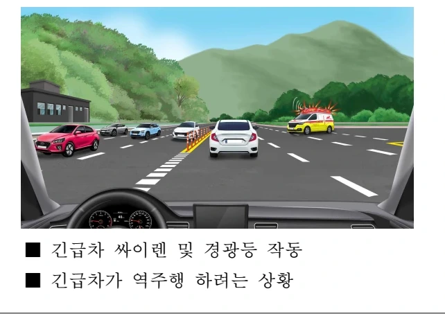

849. Which of the following are the correct ways to drive in the given situation? (Select TWO)

- ①Ignore the emergency vehicle violating traffic laws and continue driving.
- ②Use the high-beam headlights several times to prevent the emergency vehicle from committing violations.
- ③Apply the brakes multiple times to signal to the trailing driver.
- ④Stop at a distance to allow the emergency vehicle to drive against the direction of traffic.
- ⑤Stop in front of the emergency vehicle to prevent it from proceeding.
Show answer
Answer
③ Apply the brakes multiple times to signal to the trailing driver.
④ Stop at a distance to allow the emergency vehicle to drive against the direction of traffic.
Reference
Article 29 (Priority Passage for Emergency Vehicles) ① Notwithstanding Article 13, Paragraph 3, emergency vehicles may pass in the center or left part of the road in urgent and unavoidable cases. ② Notwithstanding the case where an emergency vehicle must stop pursuant to this Act or an order pursuant to this Act, it is permitted to proceed without stopping in urgent and unavoidable cases. ③ In the case of paragraph 1 or 2, the driver of an emergency vehicle must pay particular attention to traffic safety while driving. ④ When an emergency vehicle approaches an intersection or its vicinity, drivers of cars, horses and trams must stop temporarily to avoid the intersection. ⑤ When an emergency vehicle approaches from a place other than that specified in paragraph (4), the drivers of all cars and streetcars must give way to allow the emergency vehicle to have priority. ⑥ The driver of a vehicle specified in each item of Article 2, Paragraph 22 shall not turn on the warning lights or operate the siren installed in accordance with the Automobile Management Act if the vehicle is not operated for its original emergency purpose. However, this does not apply to cases where patrols and training are conducted to prevent crime and fire, etc., as prescribed by Presidential Decree. The situation identified in the picture in question is when the vehicle is driven for its original emergency purpose in accordance with the Road Traffic Act. Therefore, since this is the time when emergency vehicles have priority, drivers of all cars and trams must give way to allow emergency vehicles to have priority. At this time, in order to provide information to drivers of cars following, it may be necessary to take action to warn of stopping, such as briefly applying the brake pedal several times.
Reference text is a machine translation for study.